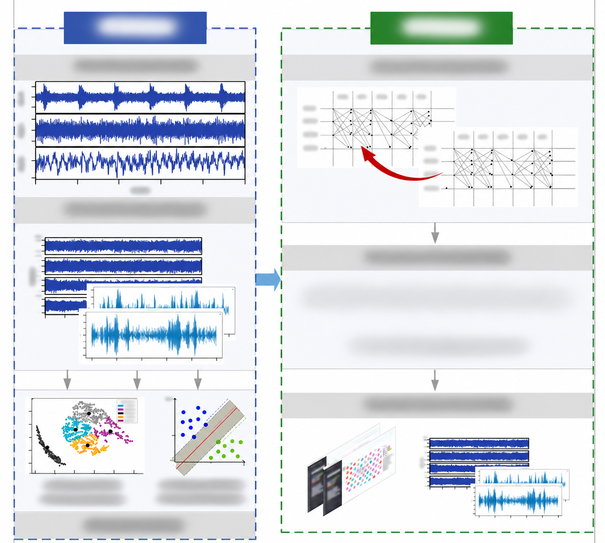
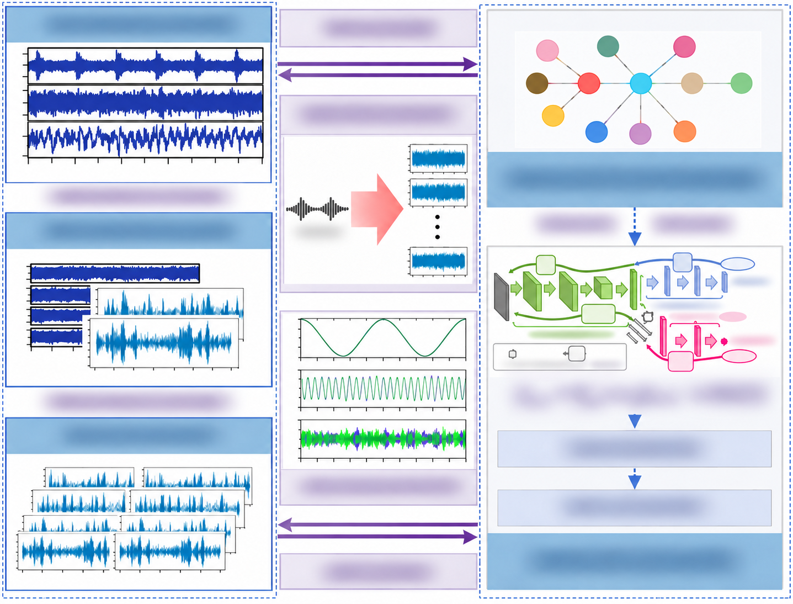

项目绘图与可视化
科研项目可视化
这两张图是我在科研项目里画的。第一张讲数据怎么分析，第二张讲数据怎么在各个模块之间传递。两张图都做了脱敏。


科研项目流程
查看大图将多组数据图表、分析步骤和决策关系组织在双栏中，呈现复杂项目的技术路线。


多模块技术架构
查看大图用三栏布局组织时序曲线、节点关系和模型示意，梳理模块间的信息流向。
项目绘图与可视化
这两张图是我在科研项目里画的。第一张讲数据怎么分析，第二张讲数据怎么在各个模块之间传递。两张图都做了脱敏。

将多组数据图表、分析步骤和决策关系组织在双栏中，呈现复杂项目的技术路线。

用三栏布局组织时序曲线、节点关系和模型示意，梳理模块间的信息流向。